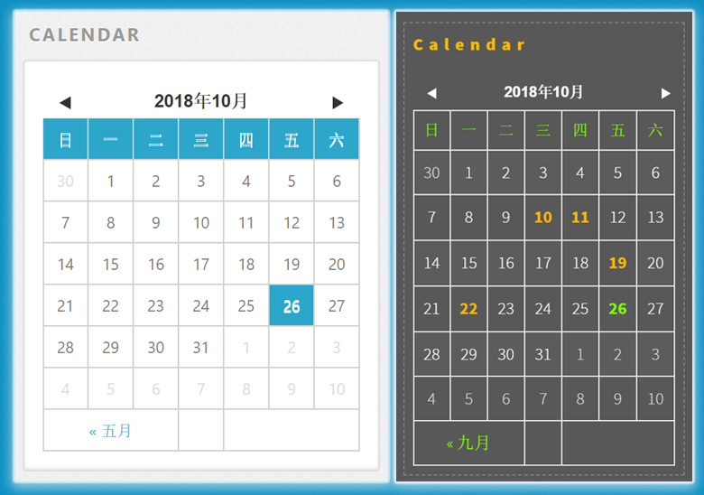

分享一个精致实用的HEXO博客小插件：日历云

一、前言
最近更新文章的频率比以前高了，在翻阅之前文章的时候发现我的博客页面有一个缺陷：不能快速浏览或者查看与日期相关的文章数据！我的博客主题使用已接近两年，整体来说还是偏于简洁实用型，基本上没有什么其他扩展功能，既然在官方网站没找到合适的插件，也不会自己打造一个插件，就一直保持了下来，现在用起来不便，才到网上搜索查找与日历相关的插件，还真发现了一个精致实用的日历云小插件，捣鼓了一番，用上后感觉非常实用，所以晾出来分享给大家，有需要的朋友可以拿去。 :smile:

另外，如果你还没有创建博客，推荐使用 Hexo 搭建；如果刚创建博客，还在搜寻可用插件，那么可以参考我之前的两篇文章：
Hexo 博客主题非常丰富，根据不同的主题，相应的插件安装和配置都会有稍许差别，我的博客主题是： Phantom Blog Hexo ，并不支持 Widget 功能，如果你是以下两款主题，可以参考原文作者文章：
- Hexo-theme-light_cn 主题，那么可以直接参考这篇文章： Hexo 主题中添加日历云功能，文章解说非常详细，按步照班即可。
- Landscape-F 主题，你可以参考这篇文章： Hexo 日历插件 ，博主正是插件的作者：净土。
- 其他主题，没有日历功能的，可以参考我的方法，在上面两篇文章的基础上加以修改，快速打造一款好用的精美日历云插件，请继续往下看。 :smiley:
二、正文
安装过程稍许繁杂，大致需要完成以下几个步骤：
- 插件的安装，使用插件生成数据文件
- 插件的安装位置，即页面显示位置，由你来决定
- 插件的表现形式，也就是 CSS 样式，自由修改
准备几个代码文件，已备好下载链接：日历云相关文件，解压后复制到相应位置：
calendar.ejs为 HTML 脚本，放在博客主题的布局文件夹下：[blog_root]/themes/[your_theme]/laout/_widget/calendar.ejs，我的主题没有_widget文件夹的，手动创建即可。calendar.js和languages.js脚本文件，我直接放在了主题的js文件夹下：[blog_root]/themes/[your_theme]/source/js/calendar.js，两个文件一样，用于动态生成日历 HTML 代码。calendar.css为日历的样式文件，我放在[blog_root]/themes/[your_theme]/source/css/calendar.css目录下，如果你使用的是styl格式的样式文件，你也可以转化为 CSS 文件或者参考上面提到的博主的文章。
1. 安装插件
和其他插件安装一样，首先需要安装 Calendar 日历插件 hexo-generator-calendar 的渲染源文件，在博客根目录下运行如下命令：
1 | cnpm install git://github.com/howiefh/hexo-generator-calendar.git --save |
插件安装好之后，如果你使用 hexo g 重新生成博客代码同时，会产生一个 calendar.json 文件在博客的根目录，这也是最重要的数据文件，保存了你的所有文章的标题、链接、日期等信息，内容格式大致如下：
1 | {"2018-10":[ |
PS: 这里有一个小 BUG ，如果你的博客配置了根目录 root 属性值，也就是说你的博客内容并不是放在服务器根目录，而是某个文件夹，那么 Calendar 插件生成的 JSON 数据文件中的链接 link 将全部无效，这时候需要手动 Hack 一下插件的源代码，当然你的配置是默认值 root: / 可以直接跳过。
以我的博客为例，我在全局配置文件 _config.yml 中配置了博客根目录： root: /blog/ 所以内容放在服务器下名为 /blog/ 的文件夹下，因此日历上的链接路径也应该加上 /blog/ 才能正常跳转，打开安装的插件源码，位置为： [blog_root]/node_modules/_hexo-generator-calendar@0.0.1@hexo-generator-calendar/lib/generator.js 修改代码如下注释部分：
1 | module.exports = function(locals) { |
2. 添加JS代码
插件和文件都安装配置好之后，需要添加一段 js 代码，用于渲染页面，在 [blog_root]/themes/[your_theme]/layout/_partial/after_footer.ejs 文件中，添加如下代码：
1 | <!-- Calendar --> |
PS: 这里又遇到一个坑，我发现原版 JS 代码并不能正常解析我在主题目录下的配置文件中的相关参数，所以在这里我删除了与配置相关的代码： theme.config.calendar.options ，忽略相关配置参数，然后在 calendar.js 中修改代码如下：
1 | //省略代码…… |
特别注意代码中的两行注释，因为我的博客根目录 root 是在服务器的 /blog/ 文件夹下，所以添加了相应的路径，这和博客根目录下的配置文件 _config.yml 相符，可以参考一下我的部分配置：
1 | # URL |
3. 相关配置
首先在博客根目录下的配置文件 _config.yml 中添加配置参数：
1 | # Calendar |
这里最后一个参数 sample_id 是我自己添加的，用于渲染日历插件在某些特定页面上，可以做测试和展示，可以不用添加。
然后在主题根目录下的配置文件 [blog_root]/themes/[your_theme]/_config.yml 中添加配置参数：
1 | # Calendar |
可以看到，因为我修改了 calendar.js 中的代码，这里的 options 参数配置直接忽略了。
4. 展示位置
基本工作都完成了，最后一步就是日历云的页面摆放位置了。这里你可以自由发挥，找到相应位置的源代码添加日历云插件即可！
以我的博客为例，我选择在菜单栏中显示日历最佳，所以找到博客主题的 .../layout/_partial/menu/ejs 菜单栏文件，添加日历云控件代码：
1 | <!-- Menu --> |
好了，工作全部完成，直接使用 hexo s 启动并查看效果吧！
最后，记得修改样式文件 calendar.css ，打造一款完全属于你自己的日历云样式哦！ :grin:
三、总结
实用！精致！简单！当然，有几个小 BUG 还是需要手动 Hack 一下的，如果有朋友愿意修改一下源代码并提交 PR 更新插件，请告知，非常感谢！
Hexo 中的日历云插件，安装和分享，希望大家喜欢！最后附上文中提到的主要的源文件，下载链接：日历云相关文件。
参考：
Hexo 主题中添加日历云功能： https://www.jianshu.com/p/b9665a8e8282
Hexo 日历插件： http://howiefh.github.io/2016/04/29/hexo-s-calendar-plugin/
我的博客地址： http://liuqingwen.me ，欢迎关注我的微信公众号：